library(mvtnorm)
library(tseries)
library(vars)
library(forecast)Marking guide assignment GLM
Step 1
Datasetet kommer från https://www.kaggle.com/datasets/vijayvvenkitesh/microsoft-stock-time-series-analysis. Datasetet är en tidserieanalys av Microsoft aktiken MSTF som är listad på den amerikanska markanden. Uppgifterna hämtades från Google Sheets med hjälp av “GOOGLEFINANCE”.
dataframe = read.csv("Microsoft_Stock.csv")Varibler:
Datasetet har över 1511 observationer med 6 olika varibler.
Date (från 04/01/2015 till 04/01/2021)
Open (Pris vid öppning)
high (högst värdet för den dagen)
Low (lägsta priset)
Close (stängnings priset)
Volume (volymen av sålda aktiker)
Periodictet
Periodiciteten av dataframen är dagligen.
Val av varibler
För en robust och nyancerad analys kommer det framförallt används av open, high och low som hjälpvariablen och close som huvudvariabel. Motiveringen är att det finns en naturlig koppling mellan dessa för att kunna förutspå aktiens closing price från ett männskligt perspektiv.
Grafer
# Matrix
dataframe <- as.matrix(dataframe[, c("Open", "High", "Low", "Close", "Volume")])
microsoft_ts <- ts(dataframe,
start = c(2015, 4),
frequency = 365)
# Subset data
microsoft_ts_trimmed <- ts(
microsoft_ts[1:(1511 - 30), ],
start = start(microsoft_ts),
frequency = frequency(microsoft_ts)
)plot(microsoft_ts_trimmed, main="")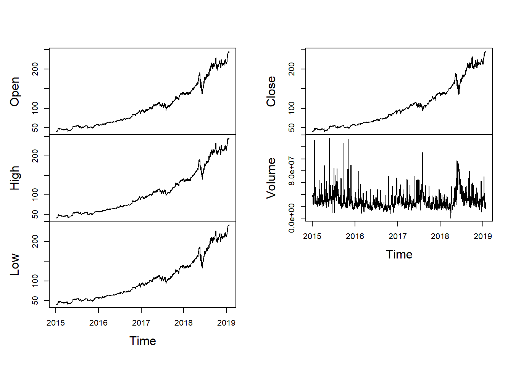
plot(microsoft_ts_trimmed[, "Close"],
main = "Closing price over time",
xlab = "date",
ylab = "Closing price")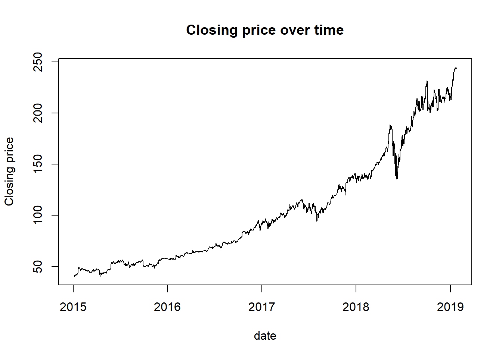
Step 2
a) Expontial smoothing
Exponential smoothing kan vi använda holtwinters() med \(Gamma = False\) och \(beta = False\) vilket kommer ge en enkel expoential smoothing.
close_ts <- microsoft_ts_trimmed[, "Close"]
exp_smoother <- HoltWinters(close_ts,alpha =0.1, beta = FALSE, gamma = FALSE)
plot(exp_smoother, main = "Exponential Smoothing - Closing Price", ylab = "Closing Price", xlab = "Date")
legend("topleft", legend = c("Original", "Exponential Values"), col = c("black", "red"), lty = 1)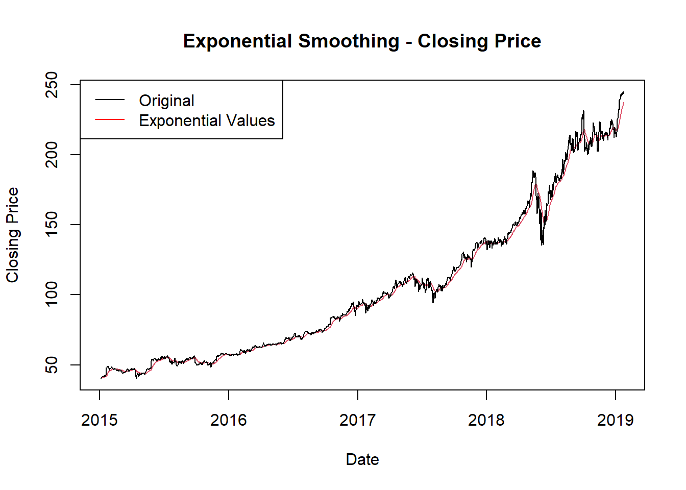
b) Rolling_forecast
Skapa en funktion som hittar rolling_forecast
rolling_forecast <- function(
data,
first_pred = 2019 + 23/365,
last_pred = 2019 + 56/365,
steps_ahead = 1
) {
end <- first_pred - 1/365
preds <- list()
i <- 1
while (end <= (last_pred - 0.01)) {
train <- window(data, end = end)
model <- HoltWinters(train)
preds[[i]] <- predict(model, n.ahead = steps_ahead)
end <- end + 1/365
i <- i + 1
}
all_preds <- ts(
unlist(preds),
start = first_pred,
frequency = frequency(data)
)
return(all_preds)
}Predict på datan
microsoft_ts_rolling <- microsoft_ts[, 4]
forecast <- rolling_forecast(
data=microsoft_ts_rolling,
steps_ahead = 1
)
forecast_hS <- rolling_forecast(
data = microsoft_ts_rolling,
steps_ahead = 4
)Plotting forecast
plot(forecast)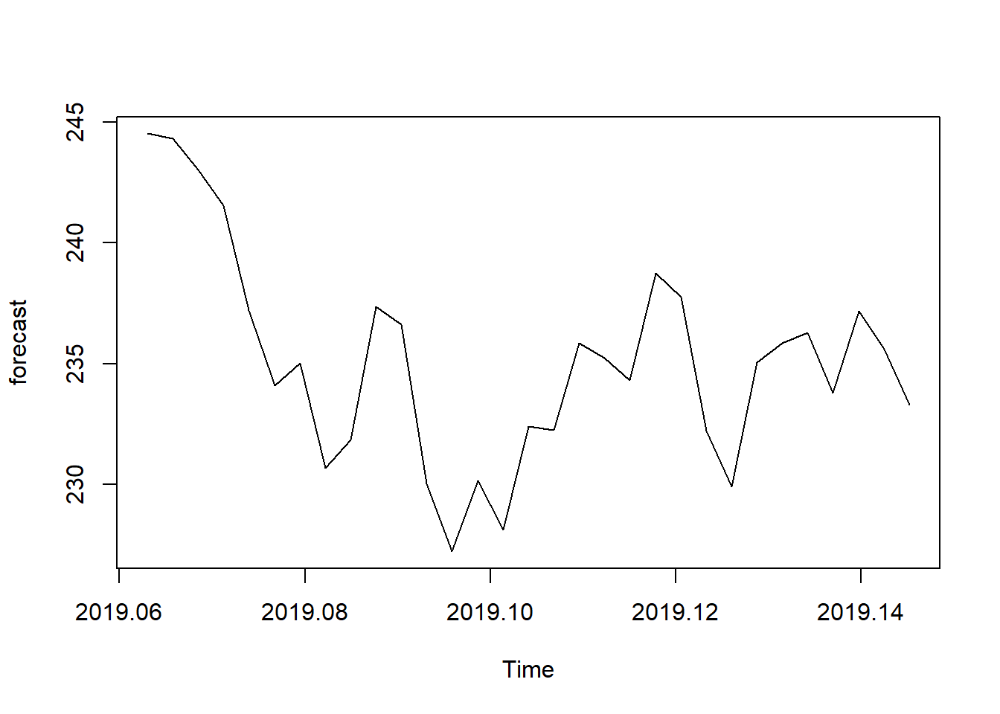
plot(forecast_hS)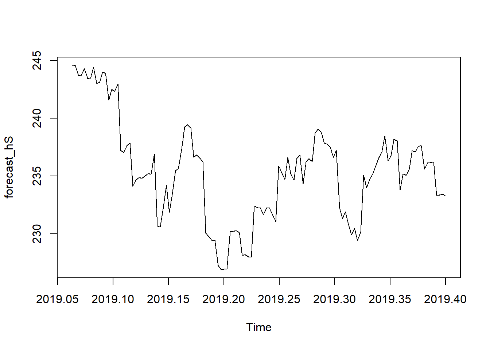
Räknar ut båda RMSE och MAD
microsoft_ts_trimmed_last_30 <- ts(
microsoft_ts[1481:1511, ],
start = end(microsoft_ts_trimmed),
frequency = frequency(microsoft_ts)
)
calc_metrics <- function(actual, predicted) {
rmse <- sqrt(mean((actual - predicted)^2, na.rm = TRUE))
mad <- mean(abs(actual - predicted), na.rm = TRUE)
c(RMSE = rmse, MAD = mad)
}
metrics0 <- calc_metrics(actual = microsoft_ts_trimmed_last_30[,4], predicted = forecast)
metrics0 RMSE MAD
3.939069 3.195211 metrics1 <- calc_metrics(actual = microsoft_ts_trimmed_last_30[,4], predicted = forecast_hS)
metrics1 RMSE MAD
7.935299 5.960994 c) Plot
alpha <- 0.05
z <- qnorm(1 - alpha / 2)
# plot
plot(microsoft_ts_trimmed_last_30[, 4], col = "black", lwd = 2, main = "h = 1",
ylab = "price")
lines(forecast, col = "blue", lwd = 2)
polygon(c(time(forecast), rev(time(forecast))),
c(forecast - z * sd(forecast), rev(forecast + z * sd(forecast))),
col = rgb(0, 0, 1, 0.2), border = NA)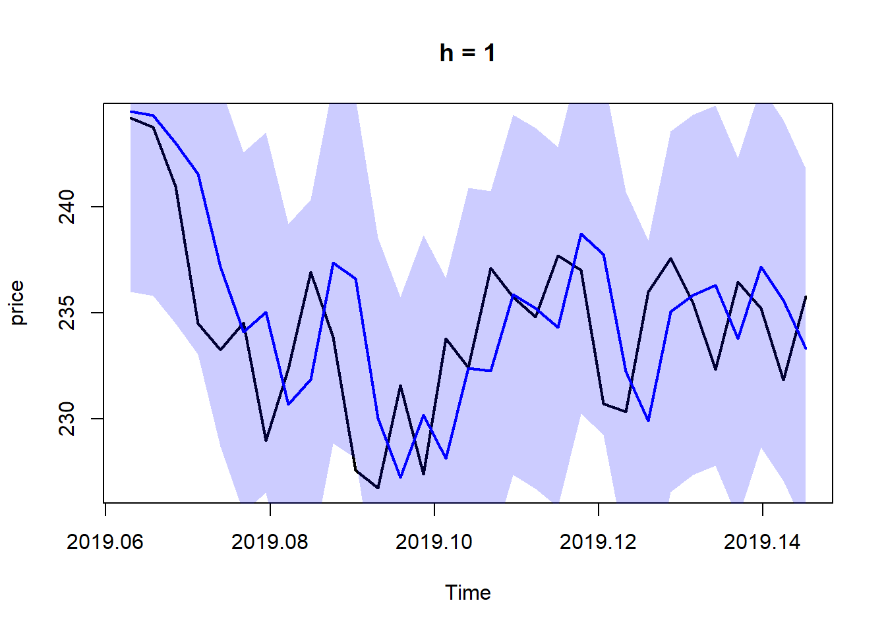
plot(microsoft_ts_trimmed_last_30[, 4], col = "black", lwd = 2, main = "h = S",
ylab = "price")
lines(forecast_hS, col = "blue", lwd = 2)
polygon(c(time(forecast_hS), rev(time(forecast_hS))),
c(forecast_hS - z * sd(forecast_hS),
rev(forecast_hS + z * sd(forecast_hS))),
col = rgb(1, 0, 0, 0.2), border = NA)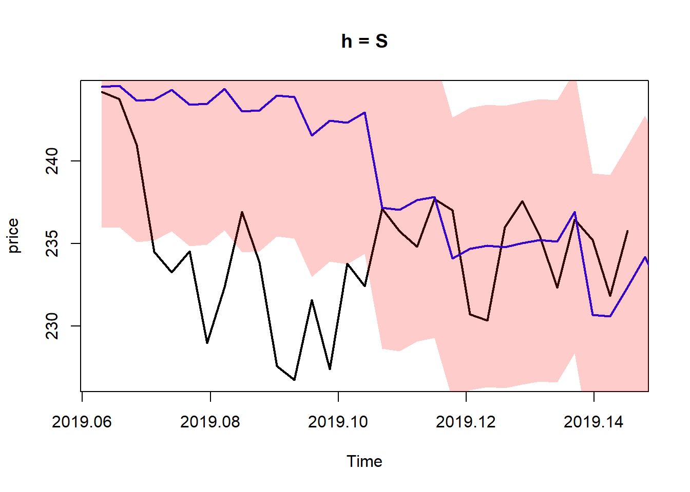
d) Random walk
set.seed(99)
N <- length(microsoft_ts_trimmed_last_30[, 4])
x0 <- microsoft_ts_trimmed_last_30[, 4][1]
mu <- mean(diff(microsoft_ts_trimmed_last_30[, 4]))
variance <- var(diff(microsoft_ts_trimmed_last_30[, 4]))
RW <- function(N, x0, mu, variance) {
z <- cumsum(rnorm(n = N, mean = 0, sd = sqrt(variance)))
t <- 1:N
x <- x0 + t * mu + z
return(x)
}
random_walk <- RW(N = N, x0 = x0, mu = mu, variance = variance)
random_walk_ts <- ts(random_walk, start = start(microsoft_ts_trimmed_last_30),
frequency = frequency(microsoft_ts_trimmed_last_30))
plot(random_walk_ts, type = "l", col = "blue", lwd = 2,
main = "Random Walk",
xlab = "Time",
ylab = "Price")
lines(microsoft_ts_trimmed_last_30[, 4],
col = "red",
lwd = 2,
lty = 2)
legend("topright",
legend = c("Random Walk", "Original Data"),
col = c("blue", "red"),
lty = c(1, 2),
lwd = c(2, 2))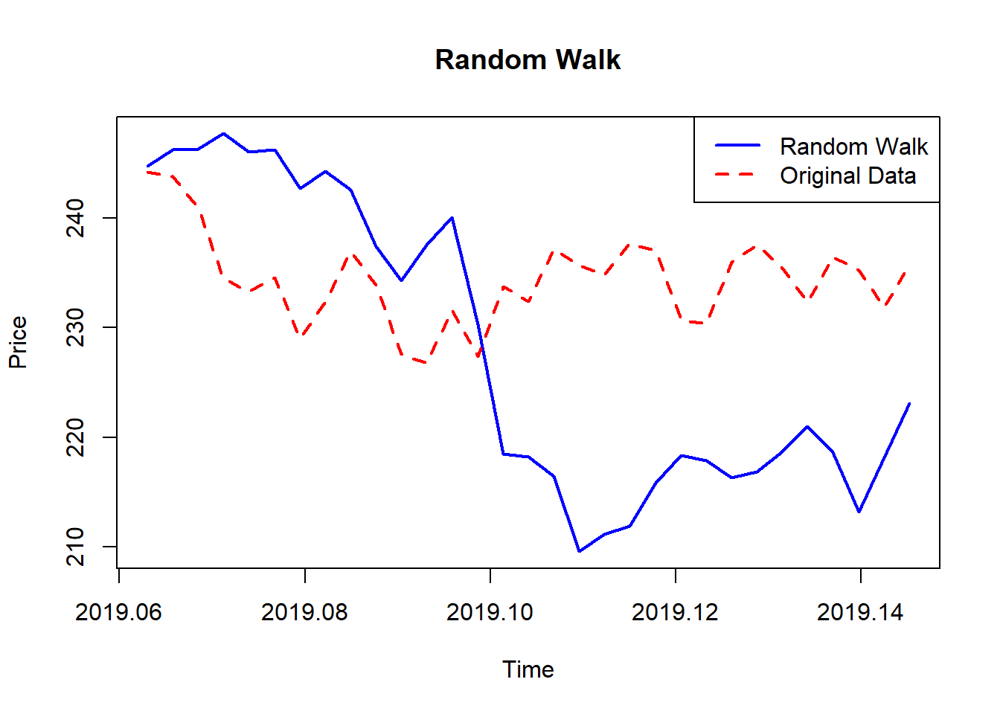
Lets simulate a few random walks
set.seed(99)
score <- c(RMSE = 0, MAD = 0)
best_model = c(RMSE = 0, MAD = 0)
best_rmse <- Inf
for (i in 1:1000){
random_walk <- RW(N = N, x0 = x0, mu = mu, variance = variance)
random_walk_ts <- ts(random_walk, start = start(microsoft_ts_trimmed_last_30),
frequency = frequency(microsoft_ts_trimmed_last_30))
result = calc_metrics(actual = microsoft_ts_trimmed_last_30[,4],
predicted = random_walk_ts)
score = score + result
if (result["RMSE"] < best_rmse){
best_rmse = result["RMSE"]
best_model = result
}
}
score/1000 RMSE MAD
15.25995 13.15743 best_model RMSE MAD
4.109651 3.642226 e) Tolka resultatet!
Efter 1000 random Simuleringar av random walk modellen fick en model värden:
RMSE MAD 4.109651 3.642226Expontiella smoothing fick följande värden med 1 stepahead respktiv 4 steps ahead:
RMSE MAD 4.040513 3.246373 h1
RMSE MAD 7.935299 5.960994 h41 stepahead modellen verkar i detta example vara överlägsen över 4 stepahead modellen, eftersom data verkar ha hög volatilitet och anpassningen av h4 modellen verkar långsammare och mindre anpassad till dramtiska förändringar. Detta resultat stämmer överens med aktie data som ofta påverkas likt en random model med ar(1).
I snitt när man undersöker random walk modellen tenderar den att vara en ganska kraftig del sämre. Detta antyder på att den expoentiala modellen är överlag bättre för att analysera de sista 30 observationerna. Dock krävs mer forskning om man istället hade ändrat sista tidperioden till längre fram eller bak kan resultaten skillnad sig. Utöver det borde man kanske testa en randomwalk med drift för ännu bättre resultat.
RMSE MAD 15.25995 13.15743 Step 3 Stationary
a) ADF-Test for stationary check
Vi använder ett adf-test för att undersöka om tidserien är stationary. Detta görs med hjälp av funktionen adf.test.
microsoft_stationarity =microsoft_ts_trimmed
adf_main <- adf.test(microsoft_stationarity[, 4], alternative = "stationary")
adf_1 <- adf.test(microsoft_stationarity[, 1], alternative = "stationary")
adf_2 <- adf.test(microsoft_stationarity[, 2], alternative = "stationary")
adf_3 <- adf.test(microsoft_stationarity[, 3], alternative = "stationary")
print(adf_main)
Augmented Dickey-Fuller Test
data: microsoft_stationarity[, 4]
Dickey-Fuller = -0.9818, Lag order = 11, p-value = 0.9417
alternative hypothesis: stationaryprint(adf_1)
Augmented Dickey-Fuller Test
data: microsoft_stationarity[, 1]
Dickey-Fuller = -1.0618, Lag order = 11, p-value = 0.9288
alternative hypothesis: stationaryprint(adf_2)
Augmented Dickey-Fuller Test
data: microsoft_stationarity[, 2]
Dickey-Fuller = -0.86697, Lag order = 11, p-value = 0.9556
alternative hypothesis: stationaryprint(adf_3)
Augmented Dickey-Fuller Test
data: microsoft_stationarity[, 3]
Dickey-Fuller = -1.0871, Lag order = 11, p-value = 0.9247
alternative hypothesis: stationaryb) Transformation
Vi transformerar sedan tidserien för att uppnå stationary. Vi gör detta på alla våra supportande tidsserier.
microsoft_stationarity = log(log(microsoft_ts_trimmed))
adf_main <- adf.test(microsoft_stationarity[, 4], alternative = "stationary")Warning in adf.test(microsoft_stationarity[, 4], alternative = "stationary"):
p-value smaller than printed p-valueadf_1 <- adf.test(microsoft_stationarity[, 1], alternative = "stationary")Warning in adf.test(microsoft_stationarity[, 1], alternative = "stationary"):
p-value smaller than printed p-valueadf_2 <- adf.test(microsoft_stationarity[, 2], alternative = "stationary")
adf_3 <- adf.test(microsoft_stationarity[, 3], alternative = "stationary")Warning in adf.test(microsoft_stationarity[, 3], alternative = "stationary"):
p-value smaller than printed p-valueprint(adf_main)
Augmented Dickey-Fuller Test
data: microsoft_stationarity[, 4]
Dickey-Fuller = -4.1914, Lag order = 11, p-value = 0.01
alternative hypothesis: stationaryprint(adf_1)
Augmented Dickey-Fuller Test
data: microsoft_stationarity[, 1]
Dickey-Fuller = -4.1244, Lag order = 11, p-value = 0.01
alternative hypothesis: stationaryprint(adf_2)
Augmented Dickey-Fuller Test
data: microsoft_stationarity[, 2]
Dickey-Fuller = -3.9735, Lag order = 11, p-value = 0.01031
alternative hypothesis: stationaryprint(adf_3)
Augmented Dickey-Fuller Test
data: microsoft_stationarity[, 3]
Dickey-Fuller = -4.2784, Lag order = 11, p-value = 0.01
alternative hypothesis: stationaryc) Plotting the stationary time series
Sist så plottar vi ut våra stationära tidsserier och lägger även till korrelogram.
diff_main <- diff(microsoft_ts[, 4])
diff_supporting <- diff(microsoft_ts[, 1:3])
plot(diff_main)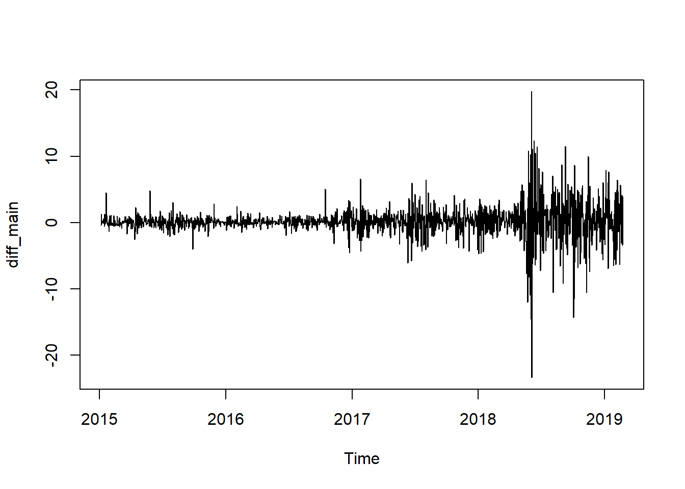
plot(diff_supporting)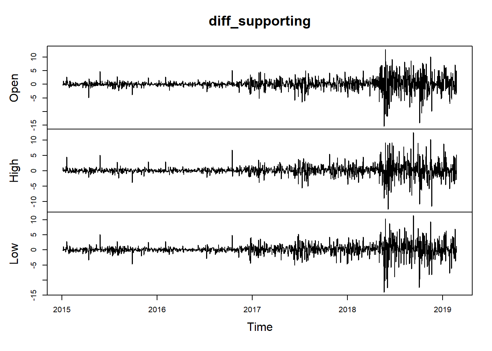
acf(diff_main, main = "ACF - Main Series")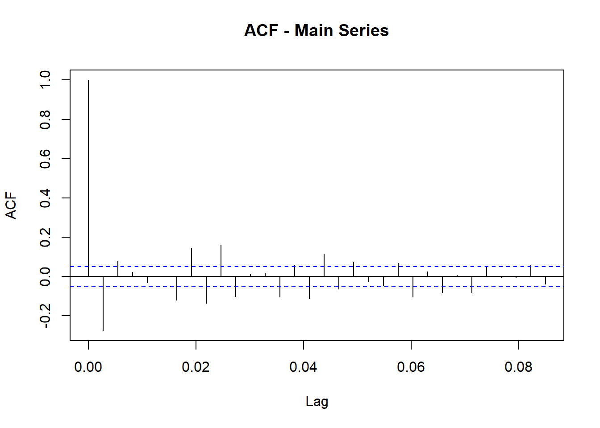
pacf(diff_main, main = "PACF - Main Series")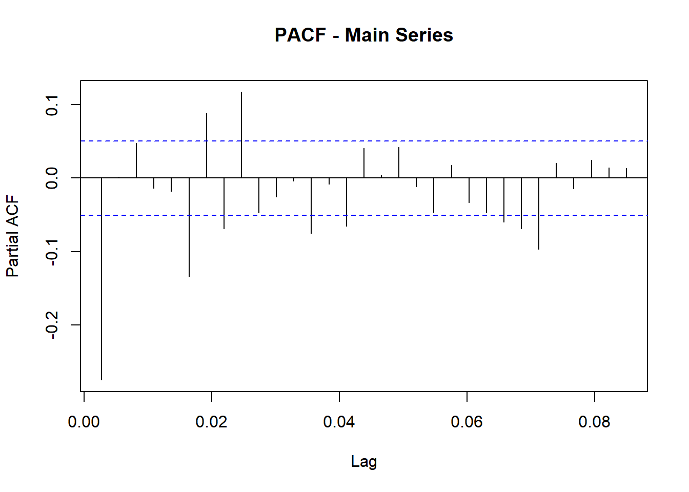
acf(diff_supporting, main = "ACF - Supporting Series")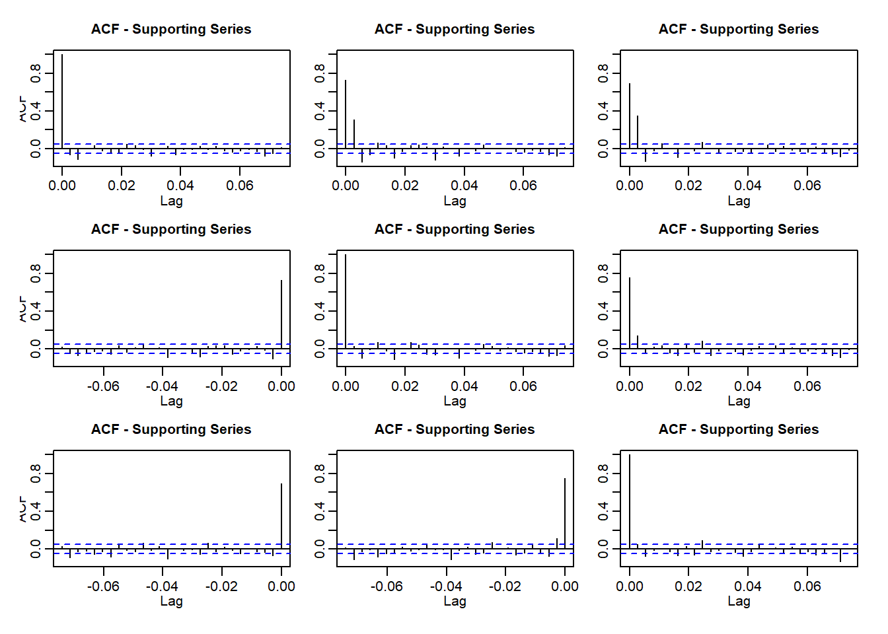
pacf(diff_supporting, main = "PACF - Supporting Series")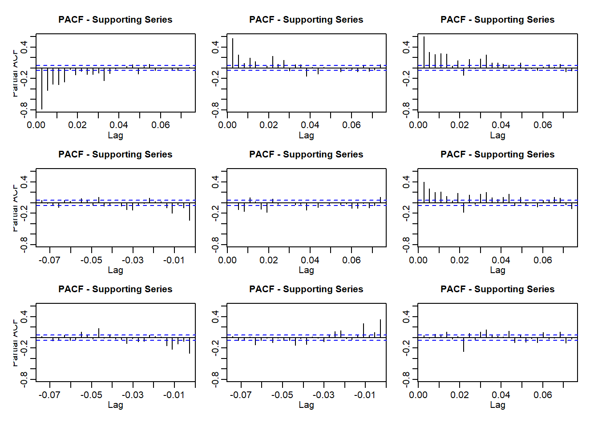
Step 4 ARMA
a) Fitting ARMA-model
adf_test <- adf.test(microsoft_ts_trimmed[, 4])
print(adf_test)
Augmented Dickey-Fuller Test
data: microsoft_ts_trimmed[, 4]
Dickey-Fuller = -0.9818, Lag order = 11, p-value = 0.9417
alternative hypothesis: stationaryclose_ts_diff <- diff(microsoft_ts_trimmed[, 4])
adf_test_diff <- adf.test(close_ts_diff)Warning in adf.test(close_ts_diff): p-value smaller than printed p-valueprint(adf_test_diff)
Augmented Dickey-Fuller Test
data: close_ts_diff
Dickey-Fuller = -11.883, Lag order = 11, p-value = 0.01
alternative hypothesis: stationaryclose_ts_diff2 <- diff(close_ts_diff)
adf_test_diff2 <- adf.test(close_ts_diff2)Warning in adf.test(close_ts_diff2): p-value smaller than printed p-valueprint(adf_test_diff2)
Augmented Dickey-Fuller Test
data: close_ts_diff2
Dickey-Fuller = -18.374, Lag order = 11, p-value = 0.01
alternative hypothesis: stationaryADF-test (Augmentes Dickey-Fuller test), för att avgöra om tidsserien är stationär eller inte. En stationär tidsseriedata innebär att de statistiska egenskaperna som medelvärde, varians och autokorrelation inte förändras över tid. Då datan är större än 0,05 innebär det att den inte är stationär. Vi differentierar tidsserien 2 gånger för att göra den stationär. Differentiering innebär att vi beräknar förändringen från en period till nästa. (yt - (yt-1)).
par(mfrow = c(1, 2))
acf(close_ts_diff2, main = "ACF")
pacf(close_ts_diff2, main = "PACF")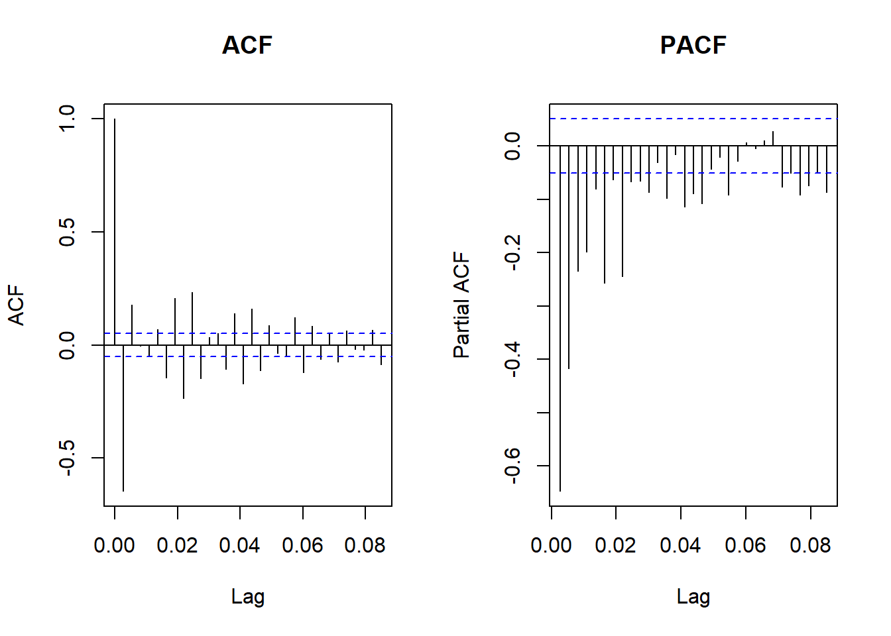
Vi använder ACF (autokorrelationsfunktion) och PACF (partiell autokorrelationsfunktion för att identifiera ordningen av AR (p) och MA (q).
arma_model <- auto.arima(microsoft_ts_trimmed[, 4], seasonal = FALSE)
summary(arma_model)Series: microsoft_ts_trimmed[, 4]
ARIMA(1,1,0) with drift
Coefficients:
ar1 drift
-0.2815 0.1376
s.e. 0.0249 0.0451
sigma^2 = 4.957: log likelihood = -3283.67
AIC=6573.33 AICc=6573.35 BIC=6589.23
Training set error measures:
ME RMSE MAE MPE MAPE MASE
Training set -0.0001110269 2.224183 1.28371 -0.07720955 1.147726 0.02904547
ACF1
Training set 0.00460349#Prognos med modellen
fitted_values <- fitted(arma_model)
#Plottar originaldata och anpassade värden
plot(microsoft_ts_trimmed[, 4], main = "Originaldata och ARMA Fitted Värden", ylab = "Close Pris", col = "blue")
lines(fitted_values, col = "red", lwd = 1)
legend("topleft", legend = c("Originaldata", "Fitted Värden"), col = c("blue", "red"), lwd = 2)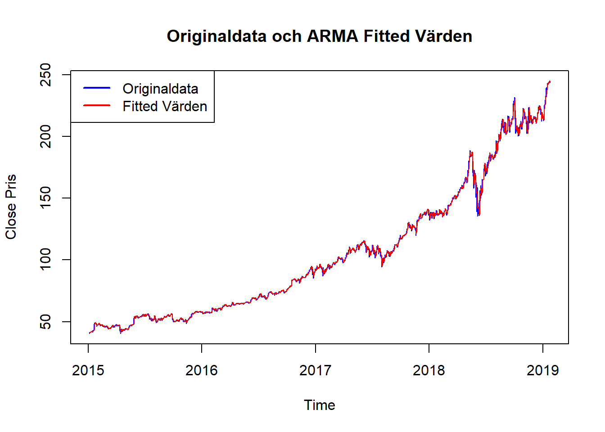
b) Residuals
#Kontrollerar residualerna
checkresiduals(arma_model)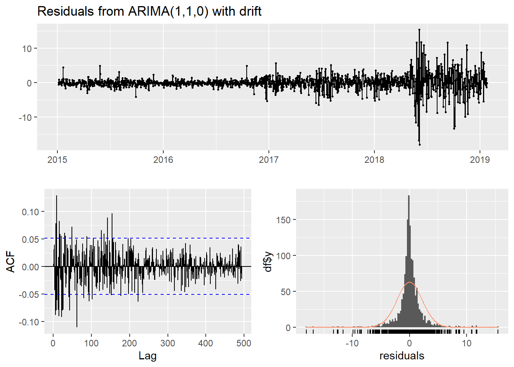
Ljung-Box test
data: Residuals from ARIMA(1,1,0) with drift
Q* = 525.58, df = 295, p-value = 3.442e-15
Model df: 1. Total lags used: 296Med ett p-värde på 0,9706 innebär det att vi måste förkasta nollhypotesen, alltså har residualerna ingen signifikant autokorrelation, då p-värdet är > 0,05.
Residualplotten (övre bild) visar att främst ligger runt 0 vilket är ett bra tecken. Dock med en extrem outlier i slutet av serien, vilket verkar vara en avvikelse, om man inte skulle fortsätta tidsserien.
ACF-plotten visar att majoriteten av residualerna ligger inom de blå-streckade gränserna, vilket tyder på att det inte finns någon kvarvarande autokorrelation, vilket vårt p-värde även sa. Histogrammet verkar tyda på en normalfördelning, vilket är önskvärt.
c) Rolling_forecast_arma
rolling_forecast_arma <- function(data,
first_pred = 2019 + 23/365,
last_pred = 2019 + 56/365,
steps_ahead = 1)
{
end <- first_pred - 1/365
preds <- list()
i <- 1
while (end < (last_pred - 0.01)) {
train <- window(data, end = end)
model <- auto.arima(train, seasonal = FALSE)
forecast_result <- forecast(model, h = steps_ahead)
preds[[i]] <- forecast_result$mean[steps_ahead]
end <- end + 1/365
i <- i + 1
}
all_preds <- ts(
unlist(preds),
start = first_pred,
frequency = frequency(data))
return(all_preds)}microsoft_ts_rolling = microsoft_ts[, 4]
forecast_arma <- rolling_forecast_arma(data=microsoft_ts_rolling,
steps_ahead = 1)
forecast_hS_arma <- rolling_forecast_arma(
data=microsoft_ts_rolling,
steps_ahead = 4)d) Plot
alpha <- 0.05
z <- qnorm(1 - alpha / 2)
# plot
plot(microsoft_ts_trimmed_last_30[, 4], col = "black", lwd = 2, main = "h = 1",
ylab = "price")
lines(forecast_arma, col = "blue", lwd = 2)
polygon(c(time(forecast_arma), rev(time(forecast_arma))),
c(forecast_arma - z * sd(forecast_arma), rev(forecast_arma + z * sd(forecast_arma))),
col = rgb(0, 0, 1, 0.2), border = NA)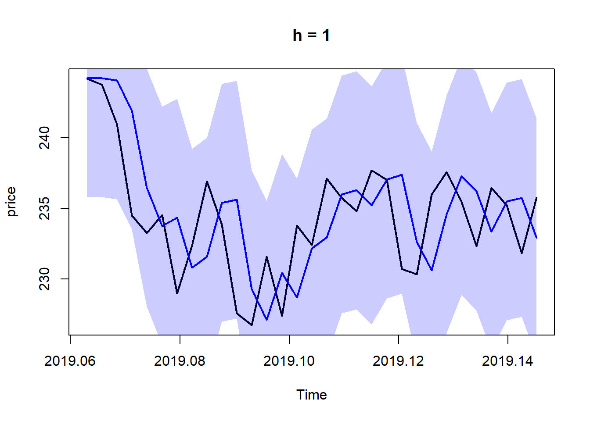
plot(microsoft_ts_trimmed_last_30[, 4], col = "black", lwd = 2, main = "h = S",
ylab = "price")
lines(forecast_hS_arma, col = "blue", lwd = 2)
polygon(c(time(forecast_hS_arma), rev(time(forecast_hS_arma))),
c(forecast_hS_arma - z * sd(forecast_hS_arma),
rev(forecast_hS_arma + z * sd(forecast_hS_arma))),
col = rgb(1, 0, 0, 0.2), border = NA)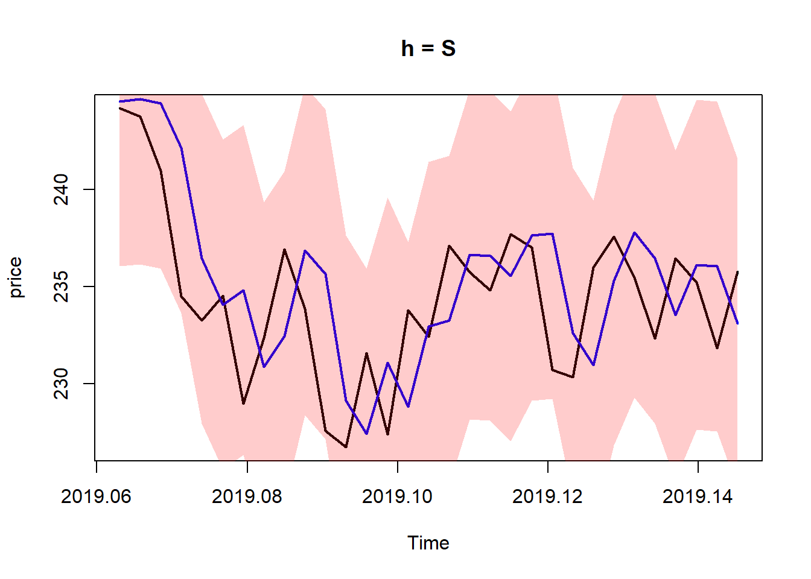
e) RMSE
metrics2 = calc_metrics(microsoft_ts_trimmed_last_30[, 4], forecast_arma)
metrics3 = calc_metrics(microsoft_ts_trimmed_last_30[, 4], forecast_hS_arma)
metrics2 RMSE MAD
3.724209 3.028956 metrics3 RMSE MAD
3.767260 3.153877 score/1000 RMSE MAD
15.25995 13.15743 best_model RMSE MAD
4.109651 3.642226 Från tidigare uppgifter har det etablerads en baseline random walk modell i detta fall ser vi tydligt att båda valen av Arma model får bättre resultat en den bästa random walk modellen ur 1000 simulationer då kan vi säkersälla att ARMA är bättre modelval.
Step 5 VAR
a) Fitting VAR-model to data
VAR_micro <- VAR(microsoft_ts_trimmed[, 1:4])
residuals_close <- residuals(VAR_micro)
acf((residuals_close)[, c("Close", "High")])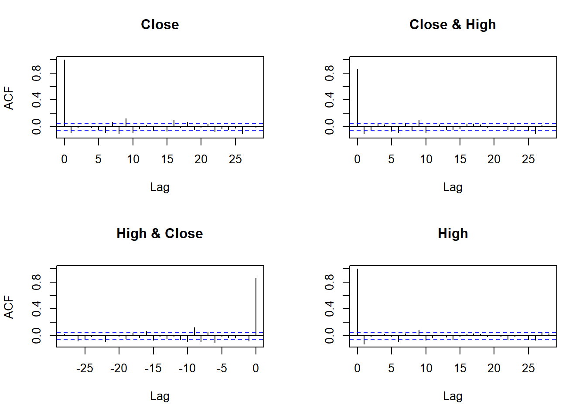
acf((residuals_close)[, c("Close", "Open")])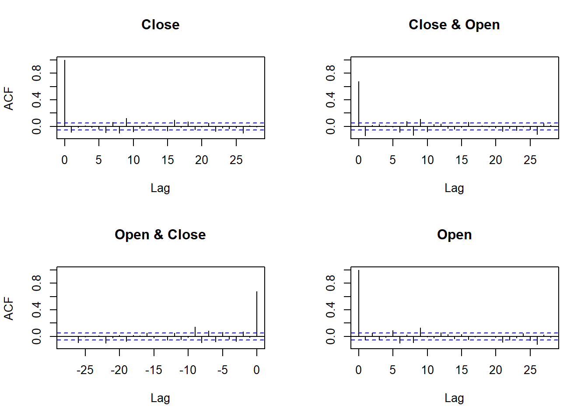
acf((residuals_close)[, c("Close", "Low")])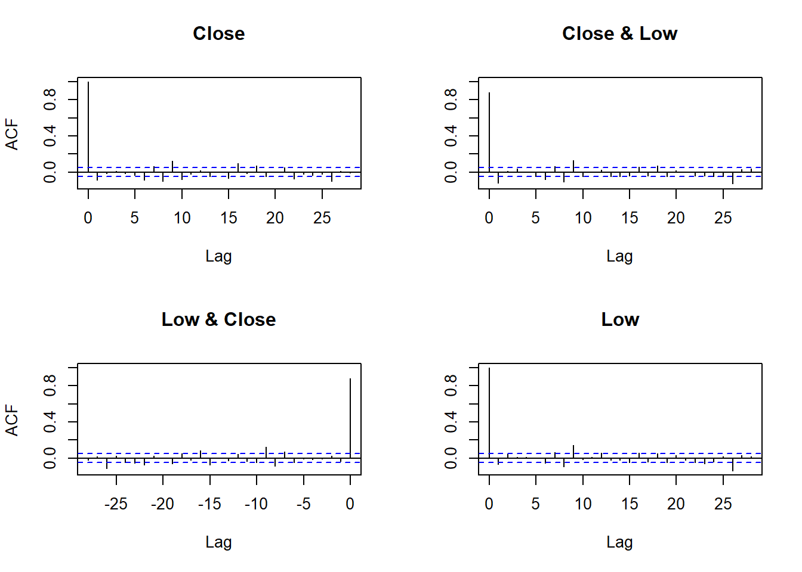
Använder normality.test för att testa objektens normalitet. Det hög p värdet antyder tydligt att det väldigt signifikanta villket beskriver att vår data inte är normalfördelad
b) Checking for normality
normality_test <- normality.test(VAR_micro)
print(normality_test)$JB
JB-Test (multivariate)
data: Residuals of VAR object VAR_micro
Chi-squared = 58189, df = 8, p-value < 2.2e-16
$Skewness
Skewness only (multivariate)
data: Residuals of VAR object VAR_micro
Chi-squared = 2763.6, df = 4, p-value < 2.2e-16
$Kurtosis
Kurtosis only (multivariate)
data: Residuals of VAR object VAR_micro
Chi-squared = 55425, df = 4, p-value < 2.2e-16$jb.mul
$jb.mul$JB
JB-Test (multivariate)
data: Residuals of VAR object VAR_micro
Chi-squared = 58189, df = 8, p-value < 2.2e-16
$jb.mul$Skewness
Skewness only (multivariate)
data: Residuals of VAR object VAR_micro
Chi-squared = 2763.6, df = 4, p-value < 2.2e-16
$jb.mul$Kurtosis
Kurtosis only (multivariate)
data: Residuals of VAR object VAR_micro
Chi-squared = 55425, df = 4, p-value < 2.2e-16c) Estimating impulse response
irf_VAR <- irf(VAR_micro,impulse = "Close", n.ahead = 20)
plot(irf_VAR)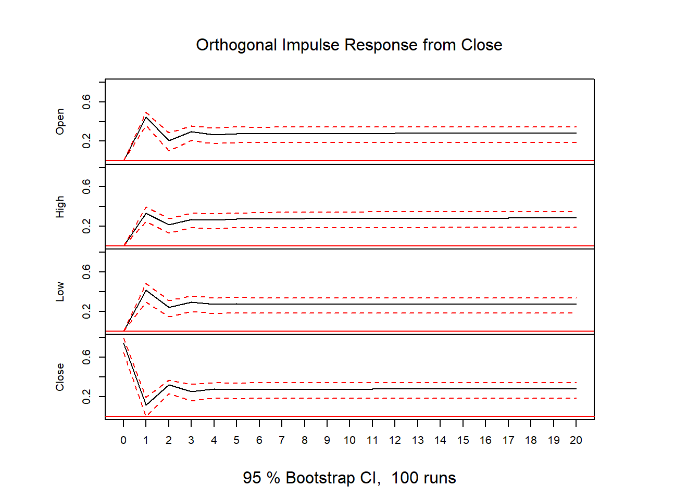
Resultatet påperkar att de första lagen för open, high och low skjuter upp över den röda 95% CI och sedan till slut jämnar ut sig vid runt 0.25
d) Rolling forecast VAR
rolling_forecast_var <- function(
data,
first_pred = 2019 + 23/365,
last_pred = 2019 + 56/365,
steps_ahead = 1
) {
end <- first_pred - 1/365
preds <- list()
i <- 1
while (end <= (last_pred - 0.01)) {
train <- window(data, end = end)
model <- VAR(train, lag.max = 12)
forecast_result <- predict(model, n.ahead = steps_ahead)
forecasted <- forecast_result$fcst[[ncol(data)]][steps_ahead, "fcst"]
preds[[i]] <- forecasted
end <- end + 1/365
i <- i + 1
}
all_preds <- ts(
unlist(preds),
start = first_pred,
frequency = frequency(data)
)
return(all_preds)
}microsoft_ts_rolling <- microsoft_ts[, 1:4]
forecast_var <- rolling_forecast_var(
data=microsoft_ts_rolling,
steps_ahead = 1
)
forecast_hS_var <- rolling_forecast_var(
data = microsoft_ts_rolling,
steps_ahead = 4
)plot(forecast_var)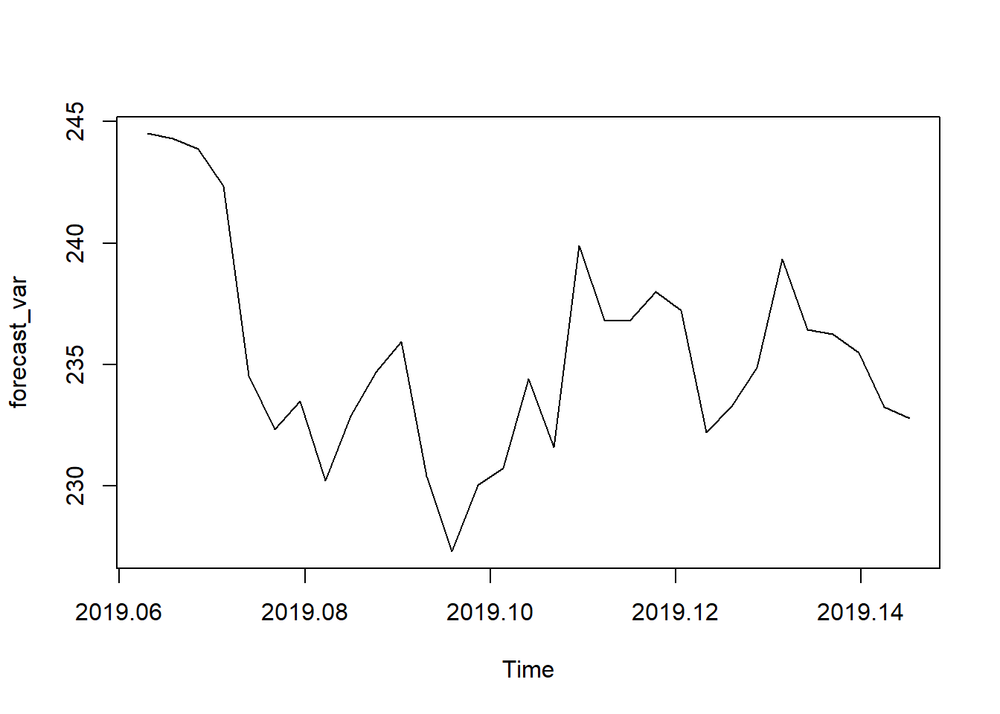
plot(forecast_hS_var)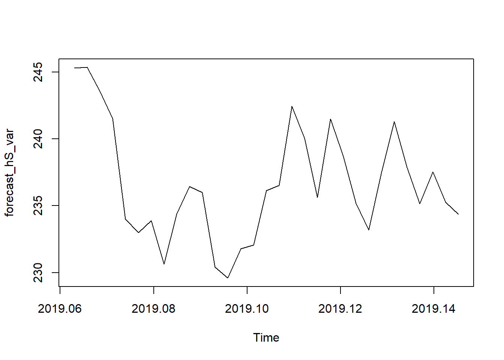
e) Plotting predictions
alpha <- 0.05
z <- qnorm(1 - alpha / 2)
# plot
plot(microsoft_ts_trimmed_last_30[, 4], col = "black", lwd = 2, main = "h = 1",
ylab = "price")
lines(forecast_var, col = "blue", lwd = 2)
polygon(c(time(forecast_var), rev(time(forecast_var))),
c(forecast_var - z * sd(forecast_var), rev(forecast_var + z * sd(forecast_var))),
col = rgb(0, 0, 1, 0.2), border = NA)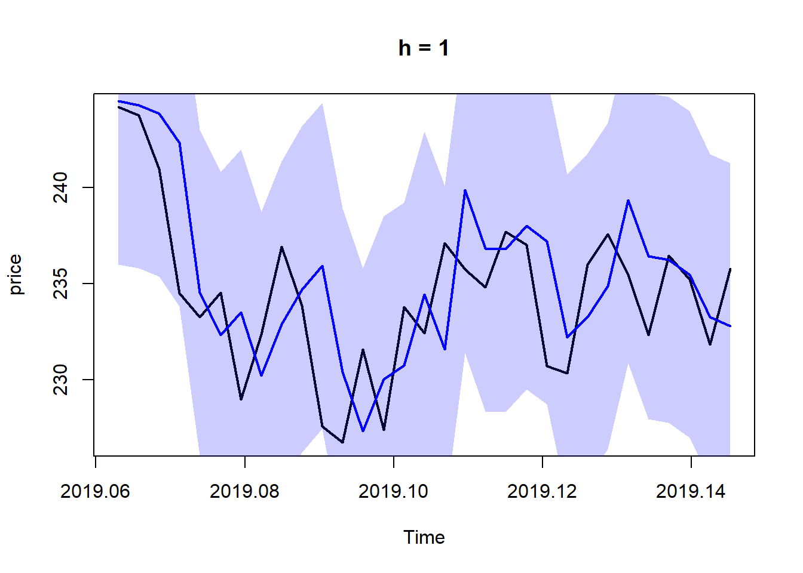
plot(microsoft_ts_trimmed_last_30[, 4], col = "black", lwd = 2, main = "h = S",
ylab = "price")
lines(forecast_hS_var, col = "blue", lwd = 2)
polygon(c(time(forecast_hS_var), rev(time(forecast_hS_var))),
c(forecast_hS_var - z * sd(forecast_hS_var),
rev(forecast_hS_var + z * sd(forecast_hS_var))),
col = rgb(1, 0, 0, 0.2), border = NA)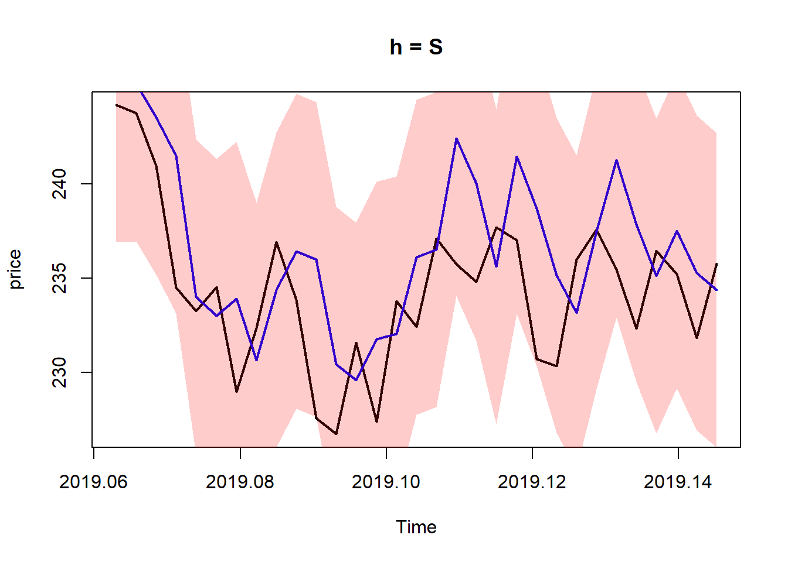
f) and g) Random walk och RMSE
metrics4 = calc_metrics(microsoft_ts_trimmed_last_30[, 4], forecast_var)
metrics5 = calc_metrics(microsoft_ts_trimmed_last_30[, 4], forecast_hS_var)
metrics4 RMSE MAD
3.583449 2.930261 metrics5 RMSE MAD
4.032385 3.380549 score/1000 RMSE MAD
15.25995 13.15743 best_model RMSE MAD
4.109651 3.642226 Utifrån våra tidigare 1000 simlueringar kan vi konstatera att i genomsnitt så preseterar en random walk sämre för vårt window i detta fall. Det antyder på att VAR modellen är bättre anpassad till vårat dataset
h) Comparing models
print("exp")[1] "exp"metrics0 RMSE MAD
3.939069 3.195211 metrics1 RMSE MAD
7.935299 5.960994 print("arma")[1] "arma"metrics2 RMSE MAD
3.724209 3.028956 metrics3 RMSE MAD
3.767260 3.153877 print("Var")[1] "Var"metrics4 RMSE MAD
3.583449 2.930261 metrics5 RMSE MAD
4.032385 3.380549 När vi jämför tidigare har vi sett att en random walk modell fungerar förvånads värt dåligt i jämförelse med dem andra modeller. Financiell data brukar oftast likna en “random walk” men i vårt fall gäller detta påstående inte riktigt, trots att mönster och trender liknar en random walk.
Alla modeller med step.ahead = 1 presterade bättre, vilket inte är så konstigt då i vår dataset har vi ingen form seasonality. VAR var utan tvekan det som presterade bäst för våran data, följt av ARMA och sist så har vi exponential smoothing.